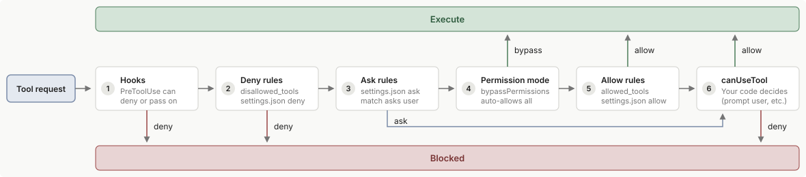

配置权限
使用权限模式、hooks 和声明式允许/拒绝规则来控制您的代理如何使用工具。
Claude Agent SDK 提供权限控制来管理 Claude 如何使用工具。使用权限模式和规则来定义自动允许的内容，以及使用 canUseTool 回调 在运行时处理其他所有情况。
权限如何被评估
如果您加载的插件包含 mod，请参阅 mod 的决定在规则和 hook 之间的位置。
当 Claude 请求一个工具时，SDK 按以下顺序检查权限：
1. Hooks
首先运行 hooks。Hook 可以直接拒绝调用或将其传递下去。返回 allow 的 hook 不会跳过下面的拒绝和询问规则；无论 hook 结果如何，这些规则都会被评估。
返回 allow 的 PreToolUse hook 也不能批准目标被 Claude Code 识别为 关键路径 的 rm 或 rmdir 命令，例如 rm -rf ~。关于该 allow 在计划模式下的作用，请参阅 计划模式下的 hook 批准。
2. 拒绝规则
如果来自 disallowed_tools 或 settings.json 的拒绝规则匹配，调用将被拒绝，且不会调用 canUseTool，即使在 bypassPermissions 模式下、即使 hook 返回了 allow 也是如此。
在 TypeScript SDK 中，如果您将某个 自定义工具 的 permission_policy 设置为 always_deny，对该工具的调用会在此步骤被拒绝。
3. 询问规则
检查来自 settings.json 的 ask 规则。如果询问规则匹配，调用会传递到您的 canUseTool 回调 以获得确认，即使在 bypassPermissions 模式下也是如此。
需要用户交互的工具行为相同：AskUserQuestion 和 MCP 工具，其服务器设置了 _meta["anthropic/requiresUserInteraction"]，总是传递到回调，即使当允许规则匹配时也是如此。在 dontAsk 模式下，两种情况都被拒绝，因为该模式从不提示。MCP 注解需要 Claude Code v2.1.199 或更高版本。
您的组织设置为 ask 的 claude.ai connector 工具也在此步骤离开流程。每个调用都传递到回调，即使在 bypassPermissions 模式下，即使当允许规则匹配时也是如此。回调接收原因 Your organization requires approval for this tool。在 dontAsk 模式下，调用被拒绝，因为该模式从不提示。
在 TypeScript SDK 中，如果您将自定义工具的 permission_policy 设置为 always_ask，任何允许规则都不会批准其调用，即使是 allowedTools 条目也不行。在 dontAsk 模式下，Claude Code 会拒绝这些调用；在 auto、plan 或 bypassPermissions 模式下，它可以在您的回调运行之前批准它们。
4. 权限模式
应用活跃的 权限模式：
- 在
bypassPermissions模式下，Claude Code 批准到达此步骤的所有内容，除了被识别出的 关键路径删除 以及被标记为Dangerous rm operation not ruled out的 Bash 命令，这些会传递下去。 - 若要在没有提示的情况下运行这些删除操作，请参阅 关闭关键路径删除提示。
- 在
acceptEdits模式下，Claude Code 批准 接受编辑模式 下列出的文件操作。 - 在
plan模式下，无论允许规则如何，Claude Code 都会将文件编辑工具发送到您的canUseTool回调。 - 在其他模式下，请求传递下去。
5. 允许规则
检查 allow 规则（来自 allowed_tools 和 settings.json）。如果规则匹配，工具被批准。工具自己批准的调用也在此步骤被解决，无需规则：例如在您的工作目录内的文件读取或 只读 Bash 命令。
被识别出的 关键路径删除 不会被允许规则批准，被标记为 Dangerous rm operation not ruled out 的命令也不会被 Bash 或 Bash(*) 规则批准。它们是否随后到达您的回调取决于权限模式：例如在 auto 模式的 Agent SDK 会话中，Claude Code 默认拒绝它们而不调用它。关键路径模式表 列出了每种模式对它们的处理方式。
允许规则不会批准从 网络路径 进行的读取。
6. canUseTool 回调
如果上述任何步骤都未解决，调用您的 canUseTool 回调 以获得决定。在 dontAsk 模式下，此步骤被跳过，工具被拒绝，不过您安装的 mod 仍然可以批准部分此类调用。
在 TypeScript SDK 中，如果您设置了 permissionPrompts: 'none'，您的回调在此步骤不会被调用。PermissionRequest hook 仍然有机会决定，如果它不决定，Claude Code 拒绝调用。该选项需要 Claude Code v2.1.259 或更高版本。

如果您在 TypeScript SDK 期望评估顺序在咨询回调之前自动批准调用的配置中传递 canUseTool 回调，SDK 在构造查询时会发出一次 Node.js 进程警告。警告的代码是 CLAUDE_SDK_CAN_USE_TOOL_SHADOWED。两个配置会触发它：
permissionMode: 'bypassPermissions'：警告文本以canUseTool will not be invoked: permissionMode 'bypassPermissions'开头。工具调用在咨询canUseTool之前就已被批准，因此您的回调只会针对少数调用运行，例如 绕过权限模式 下列出的调用。若也要检查已批准的调用，请将回调中的检查放入PreToolUsehook- 仅为工具名称的
allowedTools条目，例如"Read"：警告会在canUseTool will not be invoked for:之后列出每个此类条目。对所列工具的调用在咨询canUseTool之前就已被批准，允许规则从不批准的调用 除外。若要让您的回调针对所列工具中需要批准的调用运行，请从allowedTools中删除该工具的条目
带有说明符的条目，如 Bash(ls *) 和 acceptEdits 模式不会触发它，来自设置文件的允许规则对检查不可见。
该警告不会阻止任何调用，也不会更改任何选项。如果您的回调已经能收到您想检查的每个调用，请保持配置不变。要记录该警告，请使用 process.on('warning', ...) 监听并匹配 CLAUDE_SDK_CAN_USE_TOOL_SHADOWED 代码。
此页面重点关注 允许和拒绝规则 和 权限模式。对于其他步骤：
- Hooks： 运行自定义代码以允许、拒绝或修改工具请求。请参阅 使用 hooks 控制执行。
- canUseTool 回调： 在运行时提示用户批准，当没有更早的步骤解决调用时。请参阅 处理批准和用户输入。
允许和拒绝规则
allowed_tools 和 disallowed_tools（TypeScript：allowedTools / disallowedTools）在上述评估流程中向允许和拒绝规则列表添加条目。如果你在 allowed_tools 中命名了某个任务跟踪工具，Claude Code 也会为该会话启用这些工具。任何其他未在 allowed_tools 中列出的工具仍然可供 Claude 使用，对其的调用如果需要批准，则会进入权限模式。拒绝规则的行为取决于它们是命名工具还是在工具内限定模式。
| 选项 | 效果 |
|---|---|
allowed_tools=["Read", "Grep"] |
Read 和 Grep 被自动批准，从网络路径读取除外。此处未列出的其他工具仍然存在，对它们的调用如果需要批准，则会进入权限模式和 canUseTool。 |
disallowed_tools=["Bash"] |
Bash 工具定义从请求中移除。Claude 看不到该工具，无法尝试使用它。 |
disallowed_tools=["Bash(rm *)"] |
Bash 保持可用。匹配 rm * 如所写 的调用在每种权限模式中都被拒绝，包括 bypassPermissions。其他 Bash 调用（包括 /bin/rm）会进入权限模式。 |
disallowed_tools=["*"] |
每个工具定义都从请求中移除。拒绝规则中支持工具名称通配符："*" 匹配每个工具，"mcp__*" 匹配所有服务器中的每个 MCP 工具。 |
允许规则仅在字面 mcp__<server>__ 前缀之后接受工具名称通配符。服务器段必须无通配符，以便规则命名您配置的特定服务器：mcp__puppeteer__* 匹配来自 puppeteer 服务器的每个工具，mcp__github__get_* 匹配其 get_ 工具。未锚定的条目（如 allowed_tools=["*"] 或 allowed_tools=["mcp__*"]）会被忽略，不会自动批准任何内容。
Read 和 Edit 的限定规则采用路径模式。Edit(path) 规则管理所有写入文件的内置工具，包括 Write 和 NotebookEdit；Write(path) 规则永远不会被文件权限检查匹配。
使用 //path 表示绝对文件系统路径：Edit(//secrets/**) 的拒绝规则会阻止在磁盘上 /secrets 下任何位置的写入。使用单个前导斜杠时，Edit(/secrets/**) 在规则的源处锚定。对于通过 allowed_tools 或 disallowed_tools 传递的规则，这意味着会话的工作目录，因此规则不会阻止磁盘上的 /secrets。请参阅 Read 和 Edit 规则 了解四种锚定形式以及来自设置文件的规则如何解析。
自动批准的工具永远不会到达 canUseTool。 在任何早期步骤中被批准的工具调用，通过 acceptEdits 或 bypassPermissions，或通过允许规则，会跳过你的 canUseTool 回调，因此你在那里放置的权限检查会被该工具无声地绕过。
如果对 allowed_tools 中某个工具的调用仍然到达您的 canUseTool 回调，或在 dontAsk 模式中被拒绝，请检查它们是否属于从网络路径读取或以下调用之一。任何允许规则都不会批准这些调用。在从不提示的 dontAsk 模式中，Claude Code 会拒绝它们而不调用 canUseTool；在其他权限模式中，请按照各项说明处理它们：
-
AskUserQuestion、标记为_meta["anthropic/requiresUserInteraction"]的 MCP 工具，以及您的组织设置为ask的连接器工具：在回调中应答它们。处理澄清问题展示了如何应答AskUserQuestion，而连接器调用到达时附带的原因为Your organization requires approval for this tool -
您的应用程序标记为
always_ask的自定义工具：在回调中对该调用作出决定。要阻止这些调用到达，请在会话中途更改策略。在auto、plan和bypassPermissions模式中，该调用也可能在回调之前被批准，具体情况列于可以批准always_ask调用的权限模式 -
被识别出的
rm和rmdir关键路径移除：在default、acceptEdits和bypassPermissions模式中，在回调中允许或拒绝该移除操作，此时decisionReason以Dangerous rm开头。对于auto和plan模式，请参阅各权限模式中的关键路径移除。识别这些移除操作的检查可能会遗漏某些命令 -
裸名称：像
Read或mcp__github__get_issue这样的条目会自动批准对该工具的每个调用，任何模式都不自动批准的操作和从网络路径读取除外。 -
限定规则：像
Bash(npm test *)这样的条目仅自动批准匹配的调用，其他需要批准的Bash调用仍然会进入回调。
对于必须在每个工具调用上运行的检查，请使用 PreToolUse hook：hook 在每个其他步骤之前运行，hook 拒绝即使在 bypassPermissions 模式中也适用。
对于锁定的代理，将 allowedTools 与 permissionMode: "dontAsk" 配对：
const options = {
allowedTools: ["Read", "Glob", "Grep"],
permissionMode: "dontAsk"
};
列出的 Read、Glob 和 Grep 调用被批准，任何模式都不自动批准的操作和从网络路径读取除外。每个其他会提示的调用则会被拒绝，不过您安装的 mod 仍然可以批准其中的部分调用。
在 default 模式中不需要批准的调用会运行，无论您是否列出它们。其中包括只读 Bash 命令、不在运行前询问的 Agent 等工具，以及工作目录内的文件读取。要对 Claude 完全隐藏某个内置工具而不是拒绝其调用，请将其裸名称添加到 disallowedTools。
allowed_tools 不限制 bypassPermissions。 allowed_tools 预批准你列出的工具。其他未列出的工具不匹配任何允许规则，会进入权限模式，其中 bypassPermissions 批准它们。将 allowed_tools=["Read"] 与 permission_mode="bypassPermissions" 一起设置仍然会批准每个工具，包括 Bash、Write 和 Edit。如果你需要 bypassPermissions 但想要阻止特定工具，请使用 disallowed_tools。
你也可以在 .claude/settings.json 中声明式地配置允许、拒绝和询问规则。当启用 project 设置源时会读取这些规则，默认 query() 选项就是这样。如果你显式设置 setting_sources（TypeScript：settingSources），请包含 "project" 以使其应用。请参阅权限设置了解规则语法。
权限模式
权限模式为 Claude 使用工具的方式提供全局控制。您可以在调用 query() 时设置权限模式，也可以在流式会话期间动态更改。
在 Claude Code v2.1.302 或更高版本中，除非您设置了权限模式，或应用从其设置文件中的 permissions.defaultMode 获取了权限模式，否则应用会以 default 模式启动。在 default 模式下，对于任何需要批准的工具调用，除非您通过允许规则、hook、canUseTool 回调或权限提示工具批准它，否则 Claude Code 都会拒绝。如果工具调用被拒绝，请参阅 claude -p 和 Agent SDK 运行中的工具调用被拒绝。
可用模式
SDK 支持以下权限模式：
| 模式 | 描述 | 工具行为 |
|---|---|---|
default |
标准权限行为 | 没有基于模式的自动批准；需要批准且不匹配任何允许规则的调用会触发您的 canUseTool 回调 |
dontAsk |
拒绝而不是提示 | 任何原本会提示的调用都会被拒绝，且不调用 canUseTool，不过您安装的 mod 仍可批准其中部分调用。由 allowed_tools 或 settings.json 允许规则批准的调用会运行，在 default 模式下无需批准的调用也会运行。某些调用，例如从网络路径读取，即使 allowed_tools 或允许规则与其匹配也会被拒绝。完整列表请参阅不询问模式 |
acceptEdits |
自动接受文件编辑 | 文件编辑和文件系统操作（mkdir、rm、mv 等）会被自动批准 |
bypassPermissions |
绕过权限检查 | 工具无需权限提示即可运行，但任何模式都不会自动批准的操作，以及在云端会话之外您的应用程序标记为 always_ask 的自定义工具除外。请谨慎使用 |
plan |
计划模式 | Claude 进行探索和规划，但不编辑您的源文件；文件编辑永远不会被自动批准，而是通过您的 canUseTool 回调进行提示 |
auto |
由模型分类的批准 | 模型分类器会审查 shell 命令和网络请求等操作，对其审查的每个操作予以允许或阻止。有关可用性和决策顺序，请参阅自动模式 |
子代理继承： 如果您的主会话处于计划模式，那么即使某个子代理的 AgentDefinition 设置了 permissionMode: "acceptEdits"，它仍会在计划模式下运行。该子代理对您源文件的 Edit 和 Write 调用仍会交给您的 canUseTool 回调。计划模式同样适用于您定义的子代理，这样将工作交给子代理就无法绕过先审查计划这一步。
子代理会从主会话继承 plan、acceptEdits、auto 或 bypassPermissions；当主会话处于 default 或 dontAsk 模式时，子代理会以您设置的模式运行。即便如此，Claude Code 也永远不会应用 "bypassPermissions" 值，并且仅当该子代理可以使用自动模式时才会应用 "auto" 值。bypassPermissions 这一例外需要 Claude Code v2.1.267 或更高版本。
子代理可能具有与主 Agent 不同的系统提示词和更少约束的行为，因此继承 bypassPermissions 会授予它们完全、自主的系统访问权限。任何模式都不会自动批准的操作仍然适用。
设置权限模式
您可以在启动查询时一次性设置权限模式，也可以在会话活动期间动态更改。
[tab] 查询时
在创建查询时传入
permission_mode（Python）或permissionMode（TypeScript）。```python Python theme={null}
import asyncio
from claude_agent_sdk import query, ClaudeAgentOptionsasync def main():
async for message in query(
prompt="Help me refactor this code",
options=ClaudeAgentOptions(
permission_mode="default", # Set the mode here
),
):
if hasattr(message, "result"):
print(message.result)asyncio.run(main())
``````typescript TypeScript theme={null}
import { query } from "@anthropic-ai/claude-agent-sdk";async function main() {
for await (const message of query({
prompt: "Help me refactor this code",
options: {
permissionMode: "default" // Set the mode here
}
})) {
if ("result" in message) {
console.log(message.result);
}
}
}main();
```[tab] 流式传输期间
调用
set_permission_mode()（Python）或setPermissionMode()（TypeScript）可在会话中途更改模式。新模式会立即对所有后续工具请求生效。这样您可以先采用严格限制，随着信任建立再放宽权限，例如在审查 Claude 的初始方案后切换到acceptEdits。```python Python theme={null}
import asyncio
from claude_agent_sdk import ClaudeSDKClient, ClaudeAgentOptionsasync def main():
async with ClaudeSDKClient(
options=ClaudeAgentOptions(
permission_mode="default", # Start in default mode
)
) as client:
await client.query("Help me refactor this code")# Change mode dynamically mid-session await client.set_permission_mode("acceptEdits") # Process messages with the new permission mode async for message in client.receive_response(): if hasattr(message, "result"): print(message.result)asyncio.run(main())
``````typescript TypeScript theme={null}
import { query } from "@anthropic-ai/claude-agent-sdk";async function main() {
const q = query({
prompt: "Help me refactor this code",
options: {
permissionMode: "default" // Start in default mode
}
});// Change mode dynamically mid-session
await q.setPermissionMode("acceptEdits");// Process messages with the new permission mode
for await (const message of q) {
if ("result" in message) {
console.log(message.result);
}
}
}main();
```
模式详情
接受编辑模式（acceptEdits）
自动批准文件操作，使 Claude 无需提示即可编辑代码。其他工具（例如不属于文件系统操作的 Bash 命令）仍需要常规权限。
自动批准的操作：
- 文件编辑（Edit、Write 工具）
- 文件系统命令：
mkdir、touch、rm、rmdir、mv、cp、sed
两者都仅适用于工作目录或 additionalDirectories 内的路径。在 acceptEdits 模式下，当 Claude 执行以下操作时，Claude Code 不会自动批准该请求：
- 处理该范围之外的路径
- 写入受保护的路径
- 使用
rm或rmdir删除 Claude Code 识别为关键路径的路径 - 运行带有例如选项、glob 或
timeout 5、LANG=C前缀的touch
适用场景： 您信任 Claude 的编辑并希望加快迭代速度，例如在原型开发期间或在隔离目录中工作时。
不询问模式（dontAsk）
将任何权限提示转换为拒绝，且不调用 canUseTool，不过您安装的 mod 仍可批准其中部分调用。由 allowed_tools、settings.json 允许规则或 hook 预先批准的工具会正常运行。在 default 模式下无需批准的调用也会运行，例如在工作目录内读取文件以及调用 Agent。
以下调用即使匹配允许规则也会被拒绝：
- 您的组织设置为
ask的连接器工具 - 需要用户交互的工具，例如
AskUserQuestion，以及其服务器设置了_meta["anthropic/requiresUserInteraction"]的 MCP 工具 - 您的应用程序将其
permission_policy设置为always_ask的自定义工具 - 从网络路径读取
- 被识别出的关键路径删除
如果您的 PreToolUse hook 对被识别出的关键路径删除、从网络路径读取或对标记为 always_ask 的工具的调用返回 allow，该调用仍会被拒绝。识别这些删除操作的检查可能会漏掉某些命令。
适用场景： 您希望为无头 Agent 提供一组固定、明确的工具，并且更倾向于硬性拒绝，而不是默默依赖 canUseTool 的缺失。
绕过权限模式（bypassPermissions）
无需提示即可自动批准工具使用，但任何模式都不会自动批准的操作除外。hook 仍会执行，并可在需要时阻止操作。在 Linux 和 macOS 上，如果不在可识别的沙箱中，无论是以 root 身份还是在 sudo 下，Claude Code 都会拒绝以此模式启动，查询会在第一轮之前失败。
请极其谨慎地使用。在此模式下，Claude 拥有完全的系统访问权限。仅在您信任所有可能操作的受控环境中使用。
allowed_tools 不会约束此模式。每个工具都会被批准，而不仅仅是您列出的工具。以下控制措施仍然适用：
- 拒绝规则、显式
ask规则和 hook 会在模式检查之前进行评估，仍然可以阻止工具。 - 您的组织设置为
ask的连接器工具、需要用户交互的工具以及被识别出的关键路径删除仍会交给您的canUseTool回调处理。识别这些删除操作的检查可能会漏掉某些命令，您也可以关闭关键路径删除提示。在云端会话之外，对您的应用程序标记为always_ask的自定义工具的调用也会交给该回调处理。 - 跨会话消息传递保护措施仍然适用。
计划模式（plan）
Claude 会探索代码库并制定计划，而不编辑您的源文件。在计划模式下，文件编辑永远不会被自动批准，即使某条允许规则与之匹配或 PreToolUse hook 返回 allow 也是如此。它们会改为通过您的 canUseTool 回调进行提示。
当会话可以使用自动模式时，Claude 在规划期间运行的命令默认不会交给您的回调，因为自动模式使用的分类器模型会改为审查这些命令。启用该审查后，分类器还可以批准原本会交给您回调的只读调用，例如没有允许规则的 WebFetch 调用。
在 TypeScript SDK 中，如果您在设置 permissionMode: 'plan' 的同时设置了 allowDangerouslySkipPermissions: true，文件编辑仍会交给您的 canUseTool 回调。要在之后通过 setPermissionMode() 将以计划模式启动的会话切换到 bypassPermissions，您需要从一开始就设置 allowDangerouslySkipPermissions。
Claude 可能会在最终确定计划之前使用 AskUserQuestion 来澄清需求。有关如何处理这些提示，请参阅处理批准和用户输入。
适用场景： 您希望 Claude 提出更改但不执行，例如在代码审查期间，或者您需要在更改生效前先批准时。
自动模式（auto）
分类器模型会在 shell 命令和网络请求等操作运行之前对其进行审查，并对其审查的每个操作予以允许或阻止。有关自动模式所需的模型和提供商，以及它评估操作的顺序，请参阅使用自动模式消除权限提示。
如果您使用 set_model()、setModel() 或 applyFlagSettings() 将处于自动模式的会话切换到自动模式不支持的模型，该会话会变为 default 模式：
- 您会看到：一条子类型为
status、permissionMode设置为"default"的system消息，TypeScript SDK 将其类型定义为SDKStatusMessage。此后，需要批准且不匹配任何允许规则的调用会交给您的canUseTool回调。 - 要返回自动模式：切换到受支持的模型，然后调用
set_permission_mode("auto")或setPermissionMode("auto")。如果您将模型切换回来但没有进行该调用，会话将保持在default模式。当不受支持的模型处于活动状态时，该调用会失败并显示Cannot set permission mode to auto: auto mode unavailable for this model。
在调用 set_model()、setModel() 或 applyFlagSettings() 后变为 default 模式的行为需要 Claude Code v2.1.299 或更高版本。
相关资源
有关权限评估流程中的其他步骤：